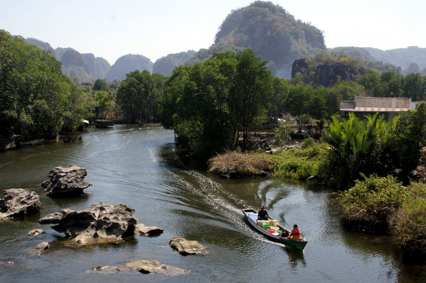
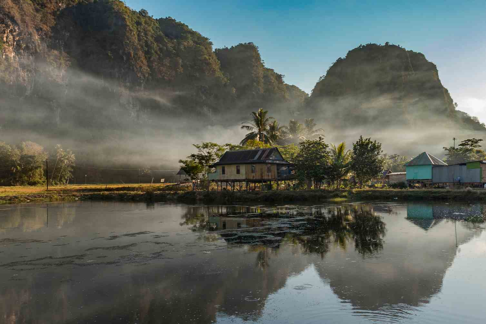

01 · PERJALANAN SUNGAI
Jelajahi dengan perahu
Menyusuri sungai dengan perahu sambil menikmati pemandangan tebing karst dan alam sekitar.
SELENGKAPNYA →

02 · KEHIDUPAN LOKAL
Kunjungi Kampung Berua
Menikmati suasana kampung dan melihat kehidupan masyarakat yang berada di sekitar kawasan.
SELENGKAPNYA →

03 · ALAM
Nikmati pemandangan
Menikmati pemandangan karst, persawahan, sungai, goa, dan suasana alam yang tenang.
SELENGKAPNYA →